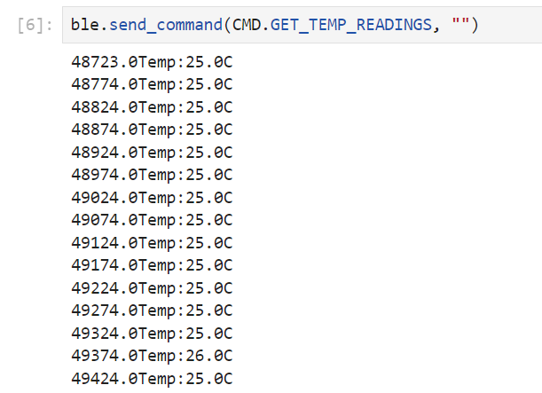
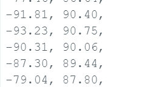

This call to action card is a great place to showcase some important information or display a clever tagline!
Lab One
Lab 1: The Artemis board and Bluetooth.
In the first experiment, I set up a basic environment for subsequent experiments and used examples to test the environment. In addition, I also used BLE to establish Bluetooth communication between the Artemis board and the computer, and wrote multiple examples to test the transmission and reception of data in different ways.
Lab One Information
Setting Up Computer for Python Development with the Artemis Board
- Ensure Python 3.9+ and pip 21.0+ are installed. Check versions with
python3 --versionandpip --version. - Install Python and pip using my system's package manager for Linux/FreeBSD users.
- Create a virtual environment named "FastRobots_ble" in my project directory using
python3 -m venv FastRobots_ble. - Activate the virtual environment with
.\FastRobots_ble\Scripts\activate(Windows) or its Linux/macOS equivalent. - Install necessary Python packages (
numpy,pyyaml,colorama,nest_asyncio,bleak,jupyterlab) using pip within the virtual environment. - Set up the Lab 2 codebase by downloading, unzipping, and ensuring the
ble_pythondirectory is in my project directory. - Start the Jupyter server with
jupyter labto work on Python code in Jupyter notebooks.
This streamlined process prepares my computer for developing Bluetooth communication projects with the Artemis board using Python.
Prelab 1 Blink test
In the first lab I ran the blink example and got the following results
Prelab 2 Serial test
The prelab 2 is to run an Artemis example sketch that operates serial communication between the board and PC.
The MCU contains two UART peripherals to perform serial communication. In this sketch, the baud rate is set to be 115200. Upon running the program, the MCU counts from 0 to 9 then enters a loop where it listens and echoes messages received. The result is shown as follows.
Prelab 3 Analog read test
The prelab 3 is to run another Artemis example analogRead to test the temperature sensor of the MCU.
Upon running the example program, the MCU continuously reads data from the temperature sensor and prints the information to the serial monitor. The result shows as the demo video.
Prelab 4 Microphone test
In this task, an example sketch is run to test the onboard pulse density microphone (PDM). The one with the largest magnitude among the sensed frequencies is printed to the serial monitor.
In the demo video below, I tried to sing. The resultant data range was 100-400, indicating higher frequencies.
Prelab Additiional for 5000-level
An extra assignment involves creating a detector for the musical note "A."
Artemis Board Setup Summary
- Obtain Artemis MAC Address: Get the BLE MAC address from the Artemis board.
- Update
connections.yaml: Replaceartemis_addresswith the obtained MAC address. - Generate UUID: Use a Python script with
from uuid import uuid4; print(uuid4())to generate a UUID. - Update Files with UUID:
- For
ble_arduino.ino: Replace the BLEService UUID. - For
connections.yaml: Updateble_servicewith the new UUID.
- For
- Save Changes: Ensure all files are saved with updates.
- Test BLE Connection: Re-test to confirm everything is set up correctly.

Note: Adjust base_ble.py for platform-specific configurations if necessary.
Task 1: ECHO
Issue an ECHO command to transmit a specific string from the computer to the Artemis board. For instance, when the computer dispatches the string "1" utilizing the ECHO functionality, it should anticipate receiving a modified version of the string, such as "Robot says -> 1 :)", retrieved through a GATT characteristic read operation.
The picture below is the result returned on the Serial Monitor after Artemis accepts the ECHO command.

Task 2： GET_TIME
The second task is to complete a command GET_TIME_MILLIS where the MCU sends the time in the format of "T:123456".
I added GET_TIME_MILLIS to the enumeration of both PC and Artemis program. I completed the command as:
The result shows as:
Task 3： Handler
The second task is to complete a command GET_TIME_MILLIS where the MCU sends the time in the format of "T:123456".
I added GET_TIME_MILLIS to the enumeration of both PC and Artemis program. I completed the command as:
Task 4： Loop_send
The second task is to complete a command GET_TIME_MILLIS where the MCU sends the time in the format of "T:123456".
I added GET_TIME_MILLIS to the enumeration of both PC and Artemis program. I completed the command as:

The result shows as:

Task 5： Send Time Data
The second task is to complete a command GET_TIME_MILLIS where the MCU sends the time in the format of "T:123456".
I added GET_TIME_MILLIS to the enumeration of both PC and Artemis program. I completed the command as:
The result shows as:

Task 6： Send Temp Data
The second task is to complete a command GET_TIME_MILLIS where the MCU sends the time in the format of "T:123456".
I added GET_TIME_MILLIS to the enumeration of both PC and Artemis program. I completed the command as:
The result shows as:
Task 7： Limitations
The Artemis board is equipped with 384 kB of RAM, and assuming this entire memory capacity is available for storing sampled data, it's possible to calculate the storage capacity for 16-bit data samples. By converting the board's RAM size into bits (384 * 1000 * 8) and then dividing by 16 bits (the size of each data sample), we find that a total of 192,000 16-bit samples can be accommodated. If these samples are collected at a rate of 150 Hz, the board can record data continuously for 1280 seconds before its memory is full, as 192,000 samples divided by 150 samples per second equals 1280 seconds. Consequently, this means the board can handle 256 "5-second flows," where each flow consists of 16-bit values sampled at 150 Hz. "T:123456".
5000-level 1 ： Data Rate
In order to generate messages of various lengths, I implemented a DATARATE command that prompts the MCU to dispatch a string of a specific length as determined by the PC. For instance, when the PC executes the command ble.send_command(CMD.DATARATE, 20), the MCU responds by sending back a string composed of 20 period characters ('.'), constituting a total of 20 bytes.
To track the data rate in real-time, I configured a notification handler on the PC that captures the current time recv_time each time a message is received. Following this, the PC commands the Artemis board to transmit a reply that includes an extra byte. The time of dispatch send_time is noted, and the data rate is determined by dividing the message length by the time interval (recv_time - send_time), with this process repeating for each message exchange.
The plot shows as:
The graph suggests that there is a general trend where the data rate rises with the increase in message payload size. Consequently, we can infer that larger message sizes contribute to minimizing overhead proportionally and enhance the actual data transfer rate. Conversely, transmitting data in several smaller packets incurs more overhead.
5000-level 2 ： Reliability
To tally the quantity of messages dispatched and acknowledged by each party, I executed a command on the Artemis board that persistently sends messages, each tagged with a sequential index. Concurrently, the PC maintains a count of the messages it receives through a dedicated handler:
With the MCU transmitting data incessantly, it achieves the maximal possible data rate. During the examination, the computer successfully captured every message emanating from Artemis, with no data loss occurring. From this observation, it's reasonable to deduce that the communication channel is dependable.
Lab Two
Lab two is about IMU model and the filters applied for the data.
Lab Two Information
Task 1: IMU Setup
The IMU is interfaced with the Artemis microcontroller via the Qwiic breakout board. Once the IMU example code is uploaded to the Artemis, it retrieves and prints the readings from the accelerometer, gyroscope, and magnetometer sensors.
In the example code, a constant AD0_VAL is defined for .begin(WIRE_PORT, AD0_VAL);. It should be set to 1, which is the default value for the SparkFun 9DoF IMU breakout, but should be 0 if the ADR jumper is closed.

I added codes to blink the LED on Artemis when IMU is connected and started as a visual indication:
\Task 2: Accelerometer
(a) Pitch and Roll
Accelerometer readings can be turned into pitch and roll through mathematical calculations. Pitch is given by pitch_a = atan2(myICM.accX(),myICM.accZ())*180/M_PI, and roll is given by roll_a = atan2(myICM.accY(),myICM.accZ())*180/M_PI.
Example outputs for {-90, 0, 90} degrees pitch and roll are:
(b) Accuracy Discussion
While noise significantly impacts the precision of accelerometer readings, resulting in an error of around ±2 degrees, the accuracy remains relatively high, with readings typically centered around the true values. Consequently, I believe that a two-point calibration is unnecessary in this scenario.
(c) Frequency Spectrum Analysis
FFT is used to analyze noise in accelerometer readings. I sampled roll data with a sample rate of 64 for 5 seconds and got 320 points to perform FFT. During the sampling period, I slowly turned IMU around its x-axis.
With the sampled data from Artemis, a python script was run to generate FFT result:
The frequency domain plot reveals that the primary component, representing the pertinent data, is situated in the low-frequency region near 0 Hz. Notably, there are no significant spikes evident in the frequency domain plot, likely due to the default selection of a low-pass filter for the accelerometer in the IMU chip. However, if I were to opt for another cut-off frequency to further attenuate residual noise, I would select 5 Hz. This choice would retain essential low-frequency data while effectively filtering out the majority of the noise.
Task 3: Gyroscope
(a) Pitch, Roll, and Yaw
Gyroscope data are collected to calculate pitch, roll and yaw:
Below are some example outputs at different gestures:
(b) Complementary Filter
The accelerometer, being sensitive to noise but resistant to drifting, complements the gyroscope, which produces smooth but drifting results. By combining the two sensors with a complementary filter, their respective drawbacks can be mitigated. The filter equation is represented as: theta = (theta + gyr_data * dt) * (1 - alpha) + acc_data * alpha.
After several tests, I chose alpha to be 0.3 to maximize performance. Here's the video demonstrating results from accelerometer only, gyroscope only, and combined, which is close to the accurate accelerometer result but without noise:
Task 4: Sample Data
To transmit IMU data to a PC, I introduced a new command called GET_SAMPLE_IMU. This command collects IMU data into arrays, then transmits the data to the PC via Bluetooth. The data is formatted as follows: time|accx,accy,accz|gyrx,gyry,gyrz.
Received data are processed by a notification handler in Python and then plotted:
Considering that an integer occupies 2 bytes and a float occupies 4 bytes, each sample will require 3 integers (6 bytes) and 6 floats (24 bytes), totaling 30 bytes. With a sampling rate of 10 samples per second, each second will generate 300 bytes of data. With 384 kB of RAM available on the Artemis, it can support approximately 1310 seconds of continuous sampling when the entire memory is allocated to the arrays.
Task 5: Record a Stunt
With the remote control, I managed to make the RC car perform stunts like flipping and spinning in place. To do a flip, the motors should first dash in one direction then motors abruptly inverse direction.
Lab Three
Lab two is about arming the Artemis board with two time-of-flight distance sensors. The range, accuracy, repeatability, and reading time of the sensors are tested.
Lab Three Information
Prelab
(a)I2C
The sensors use I2C to communicate with the Artemis board. As is specified on VL53L1X's datasheet, the default I2C address is 0x52.
(b)2 Sensors
When using multiple sensors with the same default I2C address on a single I2C bus, you need to change the address of at least one of the sensors to avoid conflicts. Here's a description of how you can achieve this using a microcontroller like the SparkFun Artemis, which has programmable GPIO pins:Initially, both Time-of-Flight (ToF) sensors are connected to the Artemis, sharing the same I2C address. To differentiate them, the XSHUT (shutdown) pin of one sensor is connected to a GPIO pin on the Artemis.
(c) Placement on Robot
Each sensor is able to detect obstacles on its corresponding side. If they detect an obstacle of the same distance simultaneously, it is probable that there is an obstacle in the front. However, this requires both of the sensors function correctly with high precision. Also, small obstacles in the front could be missed if it is closer to one sensor. More accurate measurement could be achieved by adding more sensors.
(d) Wiring
Qwiic cables are arranged inConsidering the robot's operational needs in diverse environments, robustness to ambient light is essential. Additionally, for a compact vehicle, a range of 1.3 meters is sufficient. Therefore, Short mode appears to be the most suitable for this application.
Lab Tasks & Results
Task 1: Connection
The two ToF sensors are connected to a QWIIC break-out board then to the Artemis board.
Upon establishing a physical connection and conducting an I2C scan, the Artemis detected a device at address 0x29. This address differs from the expected 0x52 listed in the VL53L1X datasheet. The discrepancy is due to the I2C protocol transmitting the most significant bit (MSB) first. The binary representation of 0x29 is '101001', and for 0x52 it is '1010010'. The first seven bits are identical for both values. I2C addresses are 7 bits long, so during transmission, these seven bits are sent, followed by a zero bit to complete the byte, translating 0x29 into 0x52 in an 8-bit context.
Task 2: Sensor Data of Chosen Mode
The ToF sensor operates in three distinct modes. Long mode, the default setting, allows for measurements up to 4 meters, offering the greatest range but with heightened sensitivity to variations in ambient light. Short mode limits the detection distance to 1.3 meters, yet it provides the strongest resilience to ambient light fluctuations. Medium mode presents a balance, detecting obstacles up to 3 meters while offering moderate ambient light sensitivity.
Considering the robot's operational needs in diverse environments, robustness to ambient light is essential. Additionally, for a compact vehicle, a range of 1.3 meters is sufficient. Therefore, Short mode appears to be the most suitable for this application.
Task 3: Two sensor working in parallel
During the preliminary lab session, I altered the I2C address of one sensor to 0x33 to enable simultaneous distance measurements from both sensors. The code used to modify the address is provided below:
The result of running the measure distance with two sensor shown in the image below:
Task 4: ToF Sensor Speed
In order to enhance the readout velocity, I eliminated the stopRanging() and clearInterrupt() instructions and relocated the startRanging() method to the setup section of the code. Now, sensor readings are outputted exclusively when new data is available, which is when .checkForDataReady() evaluates to True.

Despite the presence of redundant code segments (e.g., time retrieval and serial printing), the loop consistently executes within the range of 10 to 11 milliseconds. This marks a significant reduction from the original ranging time of 50 milliseconds. Within this 10-11 millisecond window, the predominant portion of time is still consumed by the ToF (Time-of-Flight) reading operations, accounting for approximately 8 milliseconds. As a result, it is evident that the primary bottleneck in reducing processing time lies in the I2C communication conducted between the sensors and the Artemis microcontroller.
Task 5: Time v Distance
A GET_ToF_10s command is written to send ToF data sampled in 5 s to PC through BLE:
The PC utilizes a notification handler to interpret the received message. Subsequently, the data samples from the two sensors are graphed against their respective time stamps.
Task 6: (5160) Discussion on infrared transmission based sensors
The sensor utilized in this laboratory relies on time-of-flight (ToF) infrared transmission. ToF infrared sensors function by emitting a pulse-modulated signal, measuring the time taken (t) for the signal to travel to the target and return, and then calculating the distance (d) using the formula d = t * c / 2, where c represents the speed of light.ToF IR sensors offer several advantages, including a high sample rate, compact form factor, and immunity to variations in colors, textures, and ambient lighting conditions. However, they also have drawbacks such as high cost and complex processing requirements.
Certain infrared distance sensors utilize amplitude-based measurement methods, where the amplitude of the reflected wave is compared to that of the original emitted wave to calculate distance. These sensors offer advantages such as low cost and straightforward circuitry, and they generally perform adequately across various conditions. However, they exhibit high sensitivity to target reflectivity and may experience diminished performance in environments with high ambient light levels.
Triangulation-based sensors emit a wave at an angle towards the target and measure the reflected wave using an array of diodes. Distance calculation involves analyzing the angle of incidence and the distance between the diode with the highest signal magnitude. These sensors offer advantages such as simple circuitry and reduced sensitivity to factors like color, texture, and ambient light. However, they tend to be expensive and bulky, and may not function well in environments with high ambient light levels. Additionally, they often suffer from a low sample rate.
Task 7: (5160) Sensitivity of sensors to colors and textures
In this part, I used cardboard of different colors to stick on the wall for testing to explore the impact of color on the sensor. I tested black, white and yellow respectively, and the relevant results are shown below.
It turned out that there was no notable difference among these materials in terms of reading accuracy and speed. Therefore, the conclusion that the ToF IR sensor is not sensitive to colors and textures is implied.